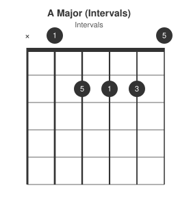
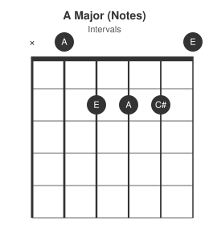
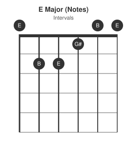

Major chords are made up of the 1st, 3rd, and 5th note of its diatonic major scale. For example, an A chord is the 1-3-5 of the A major scale (A, C#, E), and an E chord is the 1-3-5 of the E major scale (E, G#, B). Different notes, same recipe. From here we build the full set of diatonic chords in a key.
Every chord comes from a scale
The scale behind these chords is the diatonic major scale -- the same scale also called the natural major, the major scale, or the Ionian mode. All four names point at the same seven notes; "diatonic major" is the name used going forward in this post.
Every diatonic major scale is built from the same fixed pattern of steps: W-W-H-W-W-W-H. W is a whole step (two frets, a tone), H is a half step (one fret, a semitone). Starting on any root note and following that pattern produces a major scale in that key -- it's the pattern that makes a scale "major", not the starting note.
Applying W-W-H-W-W-W-H starting on A:
{kind=link}
That gives the A diatonic major scale: A B C# D E F# G#. Pull out the 1st, 3rd, and 5th notes -- A, C#, E -- and that triad is the A major chord.


Do the same with the E diatonic major scale, applying W-W-H-W-W-W-H starting on E:
{kind=link}
That gives E F# G# A B C# D#. The 1st, 3rd, and 5th are E, G#, B -- the E major chord.

Same shape of recipe, different scale, different notes. Every major chord in every key is built this way: 1-3-5 of its own major scale. That's the whole idea behind a "major chord" -- it isn't a fixed set of notes, it's a fixed relationship to whichever scale it's rooted on.
Diatonic chords: stacking the major scale
The A and E examples above both stacked a 1-3-5 triad starting on the scale's own root. Stack that same triad shape starting on every degree of the scale, not just the first, and you get the full set of chords that naturally belong to a key -- the diatonic chords.
"1-3-5" is really shorthand for a rule: take a note, skip one, take the next, skip one, take the next -- staying entirely inside the notes of the scale. Do that starting on the 1st degree of C major (C D E F G A B) and the third note is E, giving C-E-G. Do the same skip-one pattern starting on the 2nd degree instead and the third note is F, giving D-F-A. Same recipe, different starting point, but the scale only supplies the notes it has -- there's no F# to reach for, so the gap between D and F comes out smaller than the gap between C and E.
That gap is what decides major versus minor. The distance from root to third is measured in semitones (frets): a major third is 4 semitones, a minor third is 3 semitones. Breaking each triad down into its two internal gaps (root-to-3rd, and 3rd-to-5th) shows exactly where that difference comes from, and shows something that doesn't change alongside it -- the outer gap, root straight to fifth:
| Degree | Triad notes | Root-to-3rd | 3rd-to-5th | Root-to-5th | Quality |
|---|---|---|---|---|---|
| 1 | C-E-G | 4 semitones | 3 semitones | 7 semitones | Major |
| 2 | D-F-A | 3 semitones | 4 semitones | 7 semitones | Minor |
| 3 | E-G-B | 3 semitones | 4 semitones | 7 semitones | Minor |
| 4 | F-A-C | 4 semitones | 3 semitones | 7 semitones | Major |
| 5 | G-B-D | 4 semitones | 3 semitones | 7 semitones | Major |
| 6 | A-C-E | 3 semitones | 4 semitones | 7 semitones | Minor |
| 7 | B-D-F | 3 semitones | 3 semitones | 6 semitones | Diminished |
Every row's root-to-3rd and 3rd-to-5th gaps add up to the same root-to-5th distance: 7 semitones, a perfect fifth, on every degree except the 7th. Whether the chord reads as major or minor comes entirely from which gap -- 4 then 3, or 3 then 4 -- comes first; the outer boundary of the triad never moves. The 7th degree is the one exception: both inner gaps are 3 semitones, so they add up short, to 6 rather than 7 -- a flattened, or diminished, fifth. Stacking two minor thirds back to back is what makes that triad diminished rather than simply minor.
This major/minor/diminished pattern -- Maj min min Maj Maj min dim, reading up the scale -- is fixed for every major key; only the notes change, the same way the A and E chords earlier shared a recipe but not notes.
Each of these seven chords also gets a roman numeral, counting up from the root chord: I ii iii IV V vi vii°. Uppercase marks a major chord, lowercase marks minor, and the degree symbol marks diminished -- the numerals encode the same major/minor/diminished pattern from the table above, just as a label rather than a semitone count. Session musicians use a plain-digit version of the same idea -- 1 2m 3m 4 5 6m 7dim -- called the Nashville Number System, covered in full further down; it's the same major/minor/diminished labelling here, just written as numbers instead of numerals so the same chart works in any key.
I, IV, and V are the three major chords in the key, which is why they combine so freely in progressions: any two of them share strong voice-leading and neither introduces a note outside the key.
Chord table for every key
| Key | I | ii | iii | IV | V | vi | vii° |
|---|---|---|---|---|---|---|---|
| C | C | Dm | Em | F | G | Am | Bdim |
| C#/Db | Db | Ebm | Fm | Gb | Ab | Bbm | Cdim |
| D | D | Em | F#m | G | A | Bm | C#dim |
| D#/Eb | Eb | Fm | Gm | Ab | Bb | Cm | Ddim |
| E | E | F#m | G#m | A | B | C#m | D#dim |
| F | F | Gm | Am | Bb | C | Dm | Edim |
| F#/Gb | F# | G#m | A#m | B | C# | D#m | E#dim |
| G | G | Am | Bm | C | D | Em | F#dim |
| G#/Ab | Ab | Bbm | Cm | Db | Eb | Fm | Gdim |
| A | A | Bm | C#m | D | E | F#m | G#dim |
| A#/Bb | Bb | Cm | Dm | Eb | F | Gm | Adim |
| B | B | C#m | D#m | E | F# | G#m | A#dim |
Find your key, read across. The I, IV, V columns are the three chords used most often in simple progressions.
Where I, IV, and V sit on the neck
Every diatonic root note in a key can be found from a single starting point using the 6th and 5th strings, without needing a separate shape or position memorised for each chord:
- Start on the root -- that's I.
- Move up 2 frets on the same string -- that's ii.
- Move up 2 more frets on the same string -- that's iii.
- Drop down one string, back to the starting fret -- that's IV. Adjacent strings (except G to B) are tuned 5 semitones apart -- a perfect 4th, the same distance as root to IV -- so no fret-counting is needed here at all.
- Move up 2 frets on this new string -- that's V.
- Move up 2 more frets -- that's vi.
Worked example, root G on the 6th string at fret 3:
{kind=link}
G-A-B on the 6th string are I-ii-iii; dropping to the 5th string at the same fret 3 lands on C, the IV; C-D-E on the 5th string are IV-V-vi. Every "+2 frets" step is a whole step, matching the W in the W-W-H-W-W-W-H formula -- the only reason the recipe can skip past the H (iii to IV) without adjusting the fret count is the one-string drop, which supplies that gap for free via the tuning itself. Once a root is located by name on either string, this same shape of movement finds every other diatonic root in that key.
The Nashville Number System
Session musicians don't read "G, C, D" off a chart -- they read "1, 4, 5". Numbers replace chord names so the same chart works in any key: the guitarist reads it in E, the piano player reads it in Bb, nobody transposes anything, they just play the same numbers off their own instrument's shapes.
Conventions:
- Uppercase or plain digit = major (
I,IV,Vor1,4,5) - Lowercase or digit +
m= minor (ii,iii,vi, or2m,3m,6m) °ordim= diminished (vii°becomes7dim)- Slash chords show the bass note after a slash:
5/7means a V chord with the 7th in the bass
Because the numbers are relative to the key, not absolute notes, a chart written once works for a band where every player is in a different key on their own instrument. This is the foundation for the next post in this series, which applies it directly to a full 12-bar blues progression.